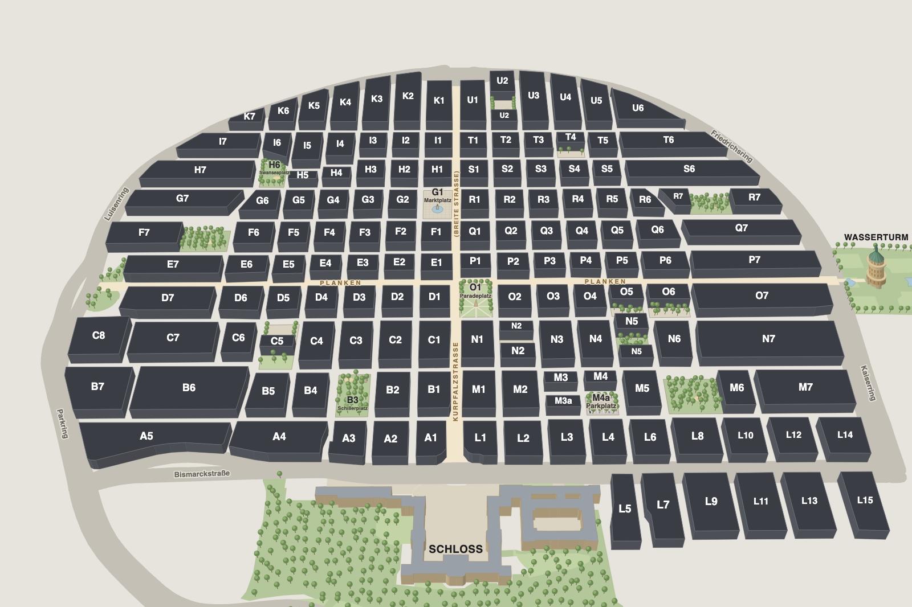
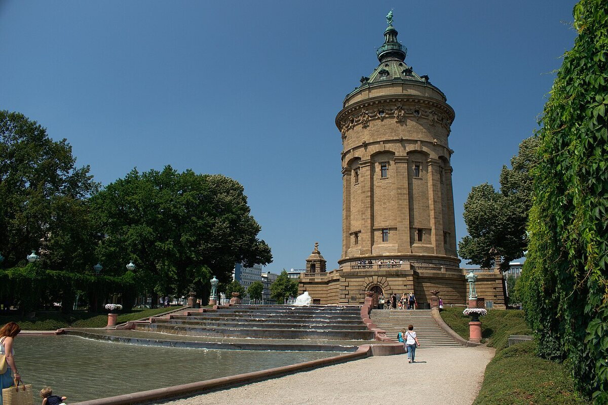

Matti Katila
Inhalte und Anforderungen
Quadrate zeigt die Mannheimer Innenstadt als 3D-Karte. Du wählst Tag, Uhrzeit und Kategorie und siehst, in welchen Quadraten gerade etwas geöffnet hat. Ein Studienprojekt an der DHBW Mannheim.
Die Innenstadt von Mannheim ist ein Raster. Statt Straßennamen tragen die Häuserblöcke Kürzel aus einem Buchstaben und einer Zahl: die Quadrate. Die Buchstaben A bis K liegen links der Kurpfalzstraße, L bis U rechts davon. Gezählt wird vom Schloss aus nach Norden, die Zahlen steigen von der Kurpfalzstraße nach außen. Eine Adresse wie „M 2, 11“ heißt also: Quadrat M2, Haus Nummer 11.
Dieses Raster ist schon eine Karte. Jeder Block hat einen Namen und eine feste Stelle. Wir zeigen die 144 Quadrate und die beiden Sonderblöcke M3a und M4a als 3D-Modell aus der Vogelperspektive und färben jeden Block danach, wie viele Orte dort zu einer bestimmten Zeit geöffnet haben.
So siehst du auf einen Blick, wo du am Sonntagabend noch essen gehen kannst, wo am Samstagmittag die meisten Läden offen sind oder welches Museum am Dienstag geöffnet hat. Die Orte und ihre Öffnungszeiten stammen aus OpenStreetMap, einer freien Karte, an der Menschen auf der ganzen Welt mitarbeiten.
Quelle zum Raster: Wikipedia, Artikel Quadratestadt (abgerufen am 29.09.2026). Der Grundriss geht auf das Jahr 1606 zurück.




Die Karte auf der Startseite beantwortet eine Frage: Was hat gerade offen? So gehst du vor:
Über der Karte stellst du den Wochentag ein und mit dem Schieberegler die Uhrzeit.
Essen, Trinken, Kultur oder Shoppen. Jede Kategorie hat eine eigene Farbe.
Je kräftiger ein Quadrat gefärbt ist, desto mehr passende Orte haben zu dieser Zeit geöffnet. Dunkelgrau heißt: keiner. Die Legende unter der Karte nennt die Stufen 1, 2–3, 4–6 und 7 oder mehr.
Das Gebäude wächst und leuchtet, darunter erscheint sein Steckbrief: was das Quadrat besonders macht und welche Orte dort geöffnet sind. Mit der Tastatur gehst du mit der Tabulatortaste zum Quadrat und wählst es mit der Eingabetaste oder der Leertaste.
Wenn du angemeldet bist, kannst du Orte merken. Quadrate mit gemerkten Orten tragen auf der Karte eine Stecknadel.
Alle 146 Quadrate stehen auch als Tabelle im Verzeichnis; quadrate.html#q-G1 springt dort direkt zur Zeile des Marktplatzes. Auf der Karte öffnet ein Link wie index.html#G1 den Steckbrief eines Quadrats: JavaScript liest den Teil nach dem # aus der Adresse. Ohne JavaScript zeigt die Startseite ein festes Bild der Karte; Filter und Steckbrief brauchen JavaScript.
Wir sind fünf Studierende im Studiengang Wirtschaftsinformatik an der DHBW Mannheim. Quadrate ist unser Gruppenprojekt im Modul Webprogrammierung.
Inhalte und Anforderungen
Design und Kreativität
Programmierung
Programmierung
Tests und Präsentation
img/favicon.svg).
Bildschirmaufnahme der Karte, 32 Sekunden, ohne Ton: Am Samstag um 19:00 Uhr wechselt die Kategorie von Essen zu Trinken, die Uhrzeit wandert auf 22:30 Uhr, dann zeigt die Karte Shoppen um 13:00 Uhr, Kultur und wieder Essen. Danach wachsen nacheinander die Quadrate O3, N1, G1 (Marktplatz) und Q1, und der Steckbrief von Q1 mit seinen Orten erscheint. Kartendaten © OpenStreetMap-Mitwirkende, ODbL.
Die Website wächst mit den Vorlesungen. Jede Zwischenversion läuft für sich: V1 nur mit HTML und CSS, V2 mit JavaScript, V3 mit PHP. Wir verwenden keine Frameworks und keine fremden Bibliotheken; Schriften, Fotos und Daten liegen auf unserem eigenen Server.
| Technik | Was wir damit gebaut haben |
|---|---|
| HTML V1 Vorlesung 2 und 3 |
|
| CSS V1 Vorlesung 4 und 5 |
|
| JavaScript V2 Vorlesung 6 |
|
| PHP V3 Vorlesung 7 |
|
Die Orte stammen aus OpenStreetMap (Lizenz ODbL), die Fotos von Wikimedia Commons mit freien Lizenzen. Alle Nachweise stehen im Impressum.